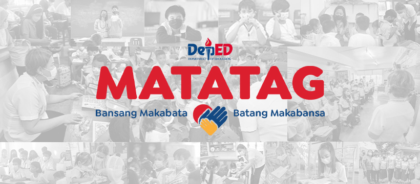
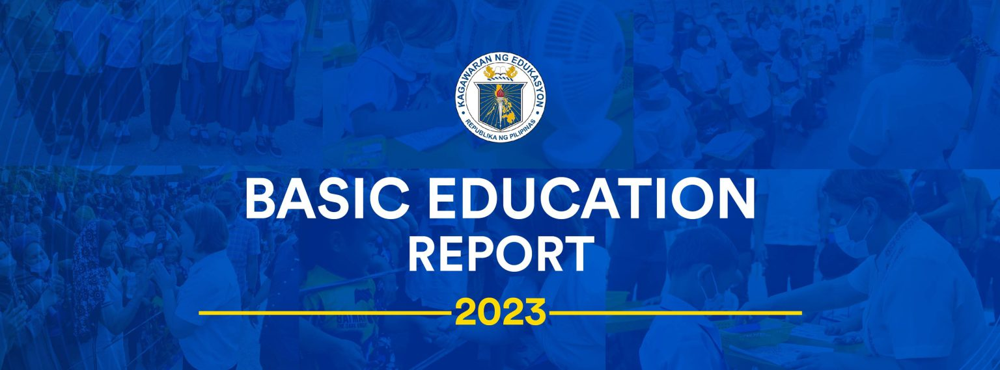

GOVPH
Home
About
▼
Overview
▼
History
Vision, Mission, Core Values, and Mandate
Organizational Structure
DepEd Data Privacy
Citizen's Charter
Careers
The Secretary
K to 12
Resources
Procurement
Contact Us
Regions
Menu
Menu
Accessibility Statement
×
This website adopts the Web Content Accessibility Guidelines (WCAG 2.0) as the accessibility standard for all its related web development and services. WCAG 2.0 is also an international standard, ISO 40500. This certifies it as a stable and referenceable technical standard. WCAG 2.0 contains 12 guidelines organized under 4 principles: Perceivable, Operable, Understandable, and Robust (POUR for short). There are testable success criteria for each guideline. Compliance to these criteria is measured in three levels: A, AA, or AAA. A guide to understanding and implementing Web Content Accessibility Guidelines 2.0 is available at: https://www.w3.org/TR/UNDERSTANDING-WCAG20/ Accessibility Features Shortcut Keys Combination Activation Combination keys used for each browser. Chrome for Linux press (Alt+Shift+shortcut_key) Chrome for Windows press (Alt+shortcut_key) For Firefox press (Alt+Shift+shortcut_key) For Internet Explorer press (Alt+Shift+shortcut_key) then press (enter) On Mac OS press (Ctrl+Opt+shortcut_key) Accessibility Statement (Combination + 0): Statement page that will show the available accessibility keys. Home Page (Combination + H): Accessibility key for redirecting to homepage. Main Content (Combination + R): Shortcut for viewing the content section of the current page. FAQ (Combination + Q): Shortcut for FAQ page. Contact (Combination + C): Shortcut for contact page or form inquiries. Feedback (Combination + K): Shortcut for feedback page. Site Map (Combination + M): Shortcut for site map (footer agency) section of the page. Search (Combination + S): Shortcut for search page. Press esc, or click the close the button to close this dialog box.
Text to Speech
×
Speak
High Contrast
LATEST UPDATE
 